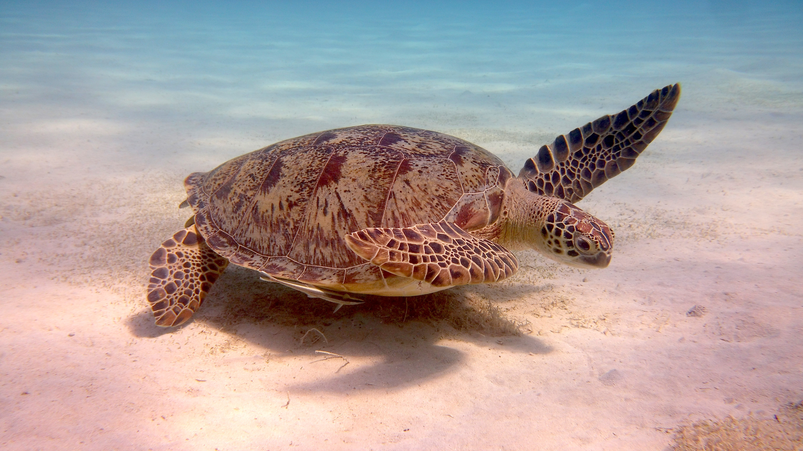
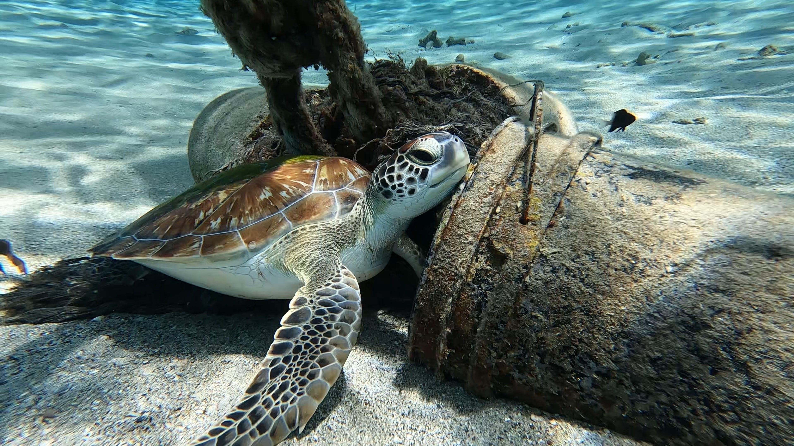

Help save
the turtles...
Sea Turtles of Sri Lanka
The beaches of Sri Lanka are visited by five different species of sea turtle – the Green Turtle, Hawksbill Turtle, Olive Ridley, Loggerhead and Leatherback.
All of which are threatened with extinction due to habitat loss and growing human pressures.
Establishments like the Hikkaduwa Sea Turtle Hatchery attempt to combat these issues and provide these marine reptiles with a fighting chance at survival. Here, turtle eggs are collected and kept safe until they are ready to hatch – at which point the hatchlings are released into the ocean – and old and injured turtles are rehabilitated and given sanctuary.
You can observe all of them during your visit too, marvel as the older turtles take it easy and strut about their tanks, and revel as the baby turtle playfully swims about their enclosures, itching to get out into the high seas.
The aim of our organization, Ceylon Turtles, is to:
- Educating the local community and foreigners about the importance of sea turtles and the environment
- Protect sea turtles in Sri Lanka
- Raise awareness against turtle shell products
About Sea Turtles
Sea turtles are large, air-breathing reptiles that inhabit tropical and subtropical seas throughout the world. Their shells consist of an upper part (carapace) and a lower section (plastron). Hard scales (or scutes) cover all but the leatherback, and the number and arrangement of these scutes can be used to determine the species. There are seven types of sea turtles, of which five types are found in Sri Lanka.
Sea turtles make incredibly long migrations between feeding and breeding areas. Sea turtles mate at sea, then come ashore on beaches to lay their eggs. Females dig a hole in the sand, then deposit their clutch of eggs, cover it back up, then return to the sea. After about 60 days, the eggs hatch and tiny hatchlings make their way from the nest to the water at night.

Why are turtles important?
Healthy oceans need sea turtles. Sea turtles are a "keystone species", which means they are an important part of their environment and influence other species around them. If a keystone species is removed from a habitat, the natural order can be disrupted, which impacts other wildlife and fauna in different ways.
Sea turtles have played vital roles in maintaining the health of the world’s oceans for more than 100 million years. Major changes have occurred in the oceans because sea turtles have been virtually eliminated from many areas of the globe.
Here are some of their main roles:
- They maintain productive coral reef ecosystems
- Nutrients left behind by eggs and hatchlings that don’t survive provide an important source for coastal vegetation
- Turtles help control their prey
- Green turtles grazing on seagrass is an important way to keep seagrass beds healthy
- Hatchlings are an important source of food for many animals

Endanger of turtle population
Six of the seven sea turtle species are classified as threatened, endangered, or critically endangered, due largely to human impact in the form of hunting, bycatch in fishing nets, pollution, and climate change.
Climate change affects the turtles by warming the temperature of the sand that sea turtle eggs are laid in, which in turn affects the outcome of the hatchlings’ sex. Sea turtles are extremely important for the ecosystem.
Nesting sea turtles help beaches by depositing their eggs in the sand. Sea turtles are extremely important for the ecosystem.
Nesting sea turtles help beaches by depositing their eggs in the sand.
Sea turtles are extremely important for the ecosystem.
Nesting sea turtles help beaches by depositing their eggs in the sand.
